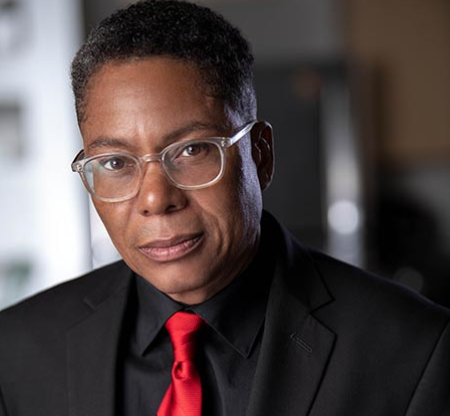

Meet Our Founders
World One TV is a black-owned streaming network. We have a combined experience of more than 70 years in the industry. In our extensive collection, you'll find movies and TV devoted to black and international cinema.
Sean Reid
Co-Founder and President
Sean Reid is President and Co-Founder of World One TV, as well as a producer, writer, and director
for World One Productions. Sean has worked on movies, documentaries, talk shows, variety shows,
award shows, news, music specials, and animation as a producer, director, and writer. Previously, he
worked at E! News Live, he has also worked as a Field Director on the Debmar-Mercury Fox show
Central Ave. for Executive Producer Will Packer, as well as The Rob Nelson Show (Fox), Square Off
(TV Guide Channel). His feature film credits include Redemption, starring Brian White (Ray Donavon,
Homeland), T.J. Storm (Godzilla, Captain America: Civil War), Horrors of War and Phin. Among the
films he has produced with frequent collaborator J. Horton are Deathday, Craving and the upcoming A
Hard Place. His documentary credits include Aliens VS. Bigfoot, Rhymecology: Write Better Rhymes,
Bigfoot in Georgia and Black Serial Killers: Truth or Fiction.
###
preneur.ai/seanreid